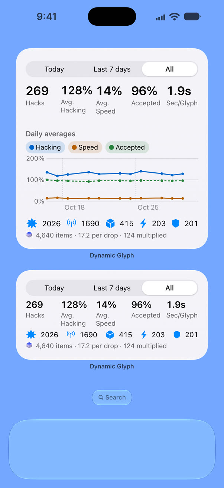

Your gear, counted
After each hack, the app reads the item panels on your screen and counts the gear shown, by item, level and rarity.

Any period, in numbers
Pick a day, 7 days or 30 days, or drag the timeline to any period you like. Statistics shows your hacks and gear for it, by hack length and by command. Export your gear readings as CSV when you want the raw numbers.

Revisit saved hacks
Saved hacks include bonuses, the Glyphs the game accepted, portal level and gear readings. Results are kept for up to 90 days, with limits of 1,000 hacks and 1,000 drops.

On your Home Screen
The Home Screen widget shows your totals for Today, the last 7 days or All, with daily averages, in three sizes. Start and stop from Control Center, or use Shortcuts and Siri to start, stop or open Statistics.